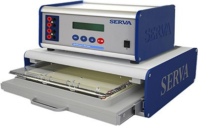
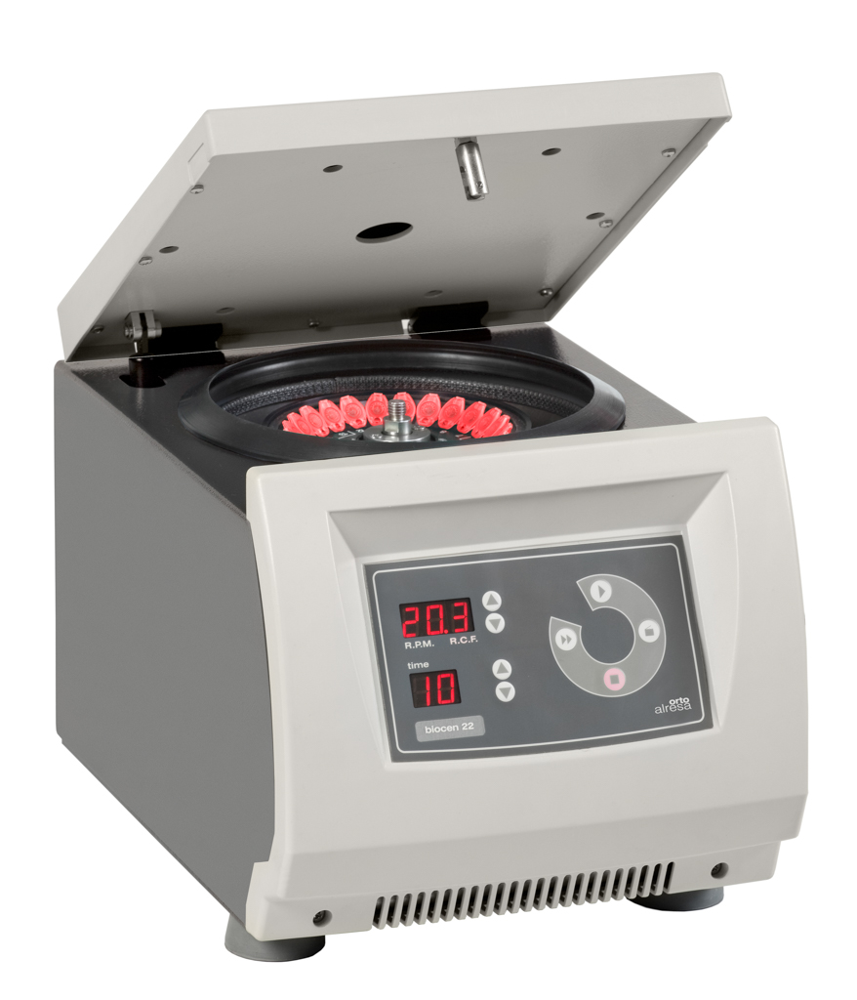
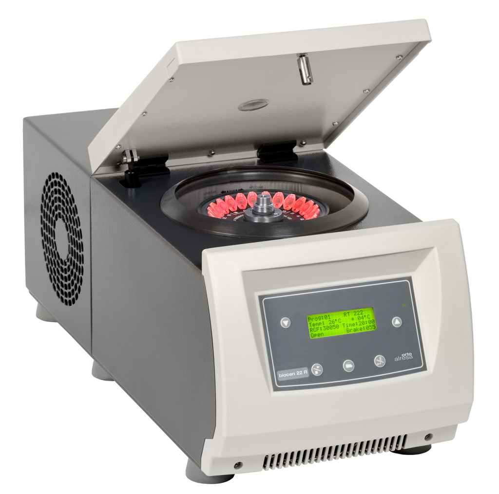
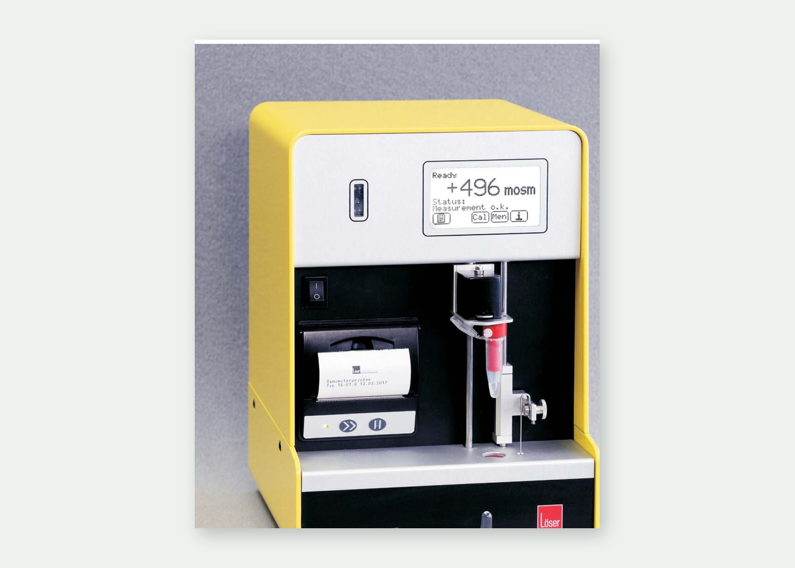
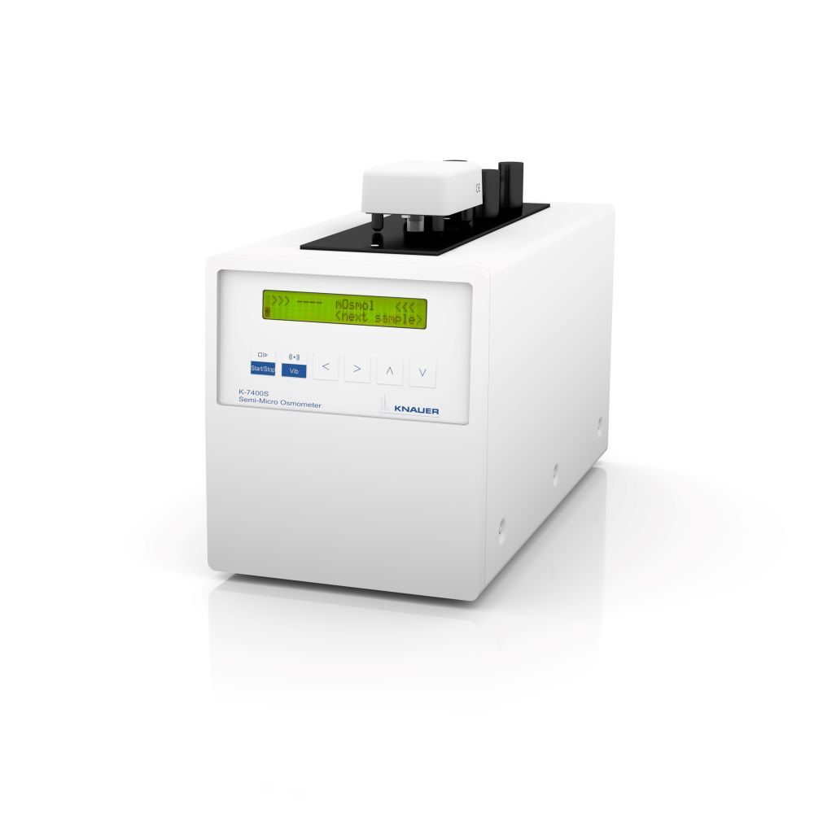
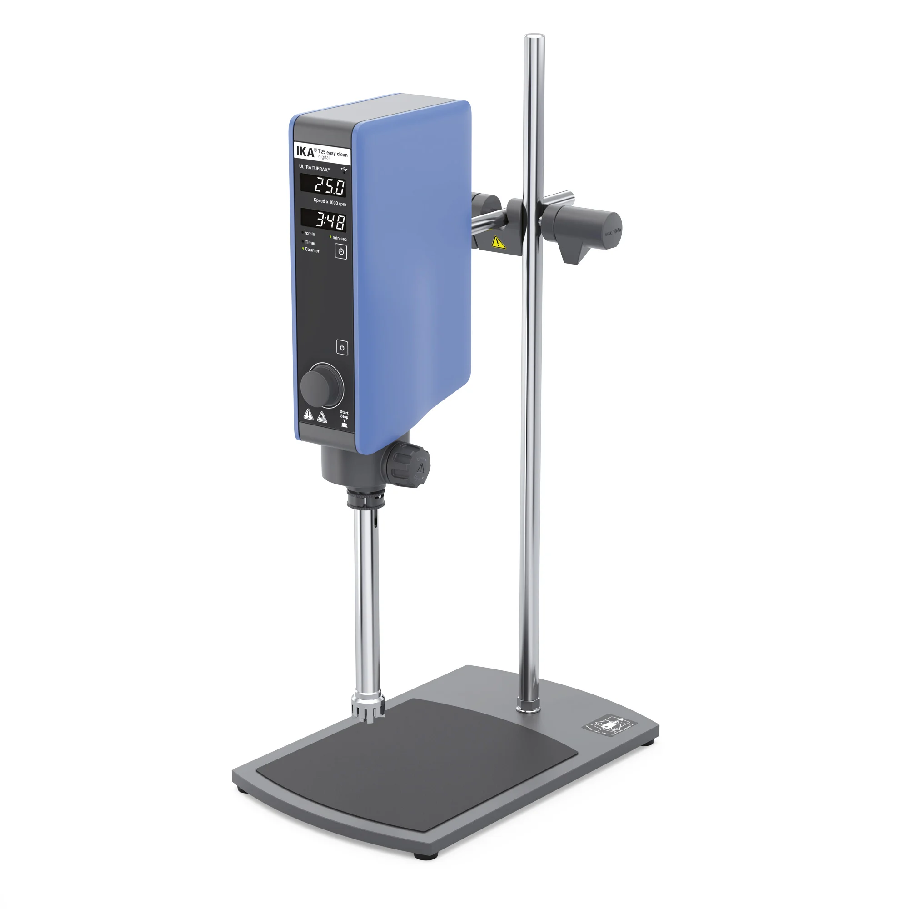
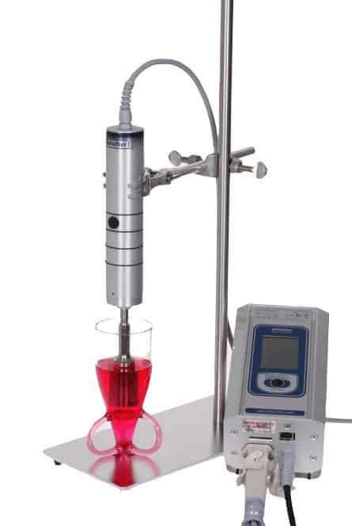
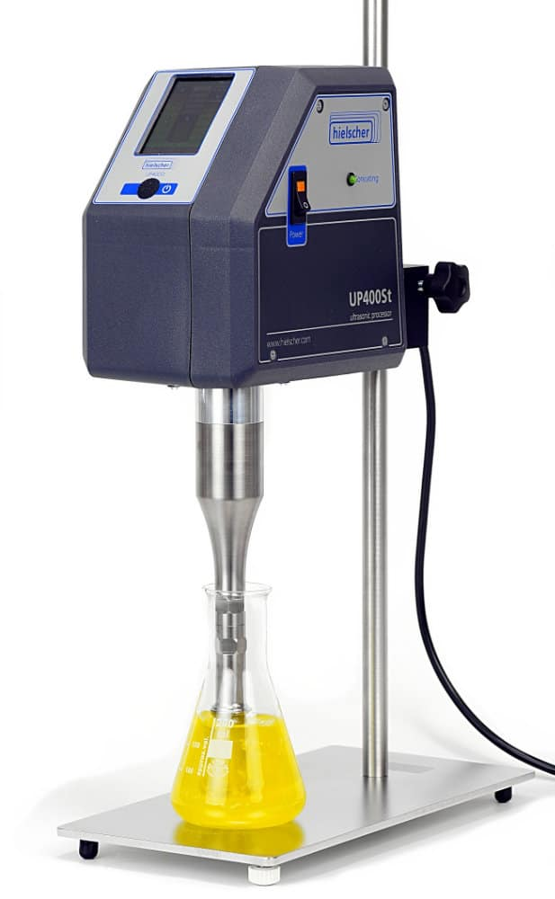

Documento consolidado a partir de folletos técnicos, catálogos y fichas oficiales de fabricantes. Presenta una base comercial cuidada visualmente, con la profundidad técnica necesaria para cotización, presentación y selección de equipos.
Electroforesis: reactivos, geles precasteados, sistemas HPE™ y blotting.
Centrífugas Universale, microcentrífugas ventiladas y refrigeradas, rotores intercambiables.
Osmómetros con variantes básicas, i y M.
Semi-Micro Osmometer K-7400S con software y accesorios.
Dispersión rotor-estator y ultrasonidos para laboratorio y pequeña escala.

SERVA ofrece un conjunto amplio en electroforesis: geles precasteados, reactivos, buffers, kits de blotting y equipos horizontales de alta resolución.
Apta cuando se busca una solución integrada: sistema, geles, buffers, reactivos y consumibles de transferencia.
SDS / Native PAGE IEF / 2D PAGE Western blot Geles y reactivos HPE™ systemsSistema HPE™ + gel precasteado + buffer como base clara para una primera especificación.
Equipo, geles, buffers y reactivos para presentar una propuesta coherente y fácil de cotizar.
BlueSlick™, TEMED y kits de blotting permiten ampliar capacidad sin salir de la misma línea.
Reactivos, geles y kits · referencia rápida de códigos.
Reactivo listo para usar para tratamiento de placas de vidrio. Alternativa no tóxica a productos con silano; evita que el gel se adhiera a la superficie y su recubrimiento dura 3–4 aplicaciones de electroforesis.
Formato spray de seguridad PE, sin propelente. Almacenamiento: +15 °C a +30 °C.
Iniciador usado junto con persulfato de amonio en reacciones de polimerización; responsable de la formación de radicales libres que inician la polimerización de acrilamida.
Ensayo (GC) mínimo 99,0 %. Envasado bajo argón. Almacenamiento: +15 °C a +30 °C.
Geles de poliacrilamida precasteados para mini slab gel electrophoresis. Formato 10 × 10 cm compatible con múltiples sistemas de tanque vertical.
Empaque individual al vacío. Disponibles para IEF y PAGE con variantes Neutral, HSE y TG PRiME™.
Kit para Western blotting semi-seco rápido de 10 mini gels SDS PAGE sobre membrana de nitrocelulosa. Transferencia eficiente en ~15 min.
Incluye 250 ml buffer 10x, 20 hojas de fleece, 10 connection papers y 10 membranas NC 0,2 µm.
| Línea / producto | Dato técnico útil | Código / formato | Nota de aplicación |
|---|---|---|---|
| HPE™ BlueHorizon™ System | Sistema completo con cámara flatbed, BluePower 3000 HPE™ y unidad de enfriamiento. Geles soportados hasta 260 × 205 mm. 3 posiciones de electrodo: 270 / 195 / 115 mm. | HPE-BHSYS.01 | Plataforma equipo + insumos para electroforesis horizontal. |
| SERVAGel™ Neutral pH 7.4 | Formato 10 × 10 cm; distintos números de wells. Compatible con varios sistemas buffer. Shelf life extendida por buffer neutro. | 43256.01 / 43220.01 / 43222.01 | Punto de partida claro para geles precasteados. |
| SERVAGel™ Neutral HSE | Gel neutral optimizado para alta velocidad; corrida típica de 20 min (30 min en 2D). | 43249.01 / 43245.01 / 43246.01 / 43247.01 | Adecuado para corridas rápidas y blotting. |
| SDS Gel Kits horizontales | 4 gels film-backed de 250 × 125 × 0,45 mm + buffer kit; 25 o 52 slots según variante. | 43359.01–43364.01 / 43391.01 | Compatible con sistemas horizontales de la gama. |
| Excellent Gel Kits 1D SDS PAGE | 25 muestras por gel, 15 µl por muestra, tamaño 260 × 125 × 0,43 mm. | 43421.01–43426.01 | Buena opción para alta resolución en 1D SDS. |
| Acrylamide/Bis Solutions | Soluciones listas 29:1 y 37.5:1 en 30 % o 40 %; también APS y TEMED grado electroforesis. | 10680.xx / 10681.xx / 10687.xx / 10688.xx / 13376.xx / 35930.xx | Reposición alineada con equipos y geles de la línea. |
Equipo HPE™, gel precasteado, buffer y reactivos puntuales para una especificación clara y coherente.
BlueSlick™ y TEMED permiten iniciar o ampliar capacidad paso a paso.
Geles, buffers, acrylamide/Bis, APS y consumibles de blotting sostienen el suministro periódico del laboratorio.

Microcentrífuga compacta para microhematocrito y microtubos. Gabinete reducido y buen desempeño para quienes necesitan capacidad sin ocupar demasiado espacio.
| Capacidad máxima | 24 × 2 ml / 12 × 5 ml |
|---|---|
| Velocidad máxima | 15.000 rpm |
| FCR máxima | 21.885 ×g |
| Pantalla | LED |
| Versión | Ventilada |
| Dimensiones | 270 × 380 × 270 mm |
| Peso neto | 16 kg |
| Alimentación | 220–230 V, 50–60 Hz, 220 W |
| Ruido | < 60 dB |
| Garantía declarada | 3 años |
| Rotor | Tipo | Capacidad máx. | RPM máx. | Radio | FCR máx. |
|---|---|---|---|---|---|
| RT 227 | Angular 45° | 24 × 1,5–2 ml | 15.000 | 82 mm | 20.627 ×g |
| RT 228 | Horizontal / capilares | 24 × 1,5 × 75 mm | 15.000 | 87 mm | 21.885 ×g |
| RT 229 | Angular 45° | 32 × 0,2 ml | 15.000 | 55 mm | 13.835 ×g |
| RT 254 | Angular 45° | 12 × 5 ml | 15.000 | 87 mm | 21.884 ×g |

Versión refrigerada para investigación y biotecnología: robusta, versátil y con control térmico preciso para mayor desempeño.
| Capacidad máxima | 8 × 15 ml |
|---|---|
| Velocidad máxima | 18.100 rpm |
| FCR máxima | 31.865 ×g |
| Pantalla | LCD |
| Versión | Refrigerada |
| Temperatura | -20 °C a 40 °C, en pasos de 1 °C |
| Garantía térmica | 4 °C a máximas rpm |
| Dimensiones | 270 × 650 × 280 mm |
| Peso neto | 41 kg |
| Potencia | 580 W |
| Garantía declarada | 3 años |
| Rotor | Tipo | Capacidad | RPM máx. | FCR máx. | Uso típico |
|---|---|---|---|---|---|
| RT 224 | Angular 45° | 32 × 0,2 ml | 18.100 | 20.145 ×g | Microvolúmenes |
| RT 222 | Angular 45° | 24 × 1,5–2 ml | 18.100 | 30.034 ×g | Microtubos estándar |
| RT 252 | Angular 45° | 12 × 5 ml | 18.100 | 31.865 ×g | 5 ml y criotubos |
| RT 223 | Angular 30° | 8 × 15 ml | 8.000 | 6.511 ×g | Tubos de mayor volumen |
La gama Löser se organiza por nivel de funcionalidad: modelos Basic para operación esencial, versiones «i» con interfaz de datos y equipos completos con impresora y escáner integrados.
Las variantes «M» permiten menor volumen de muestra (10–50 µl), útil cuando la muestra es escasa.
| Modelo | Volumen de muestra | Tiempo aprox. | Memoria | Interfaces / extras | Peso |
|---|---|---|---|---|---|
| Osmometer basic | 100 o 50 µl | 1,5 min | 100 mediciones | Touch display, air cooling | 3,7 kg |
| i Osmometer basic | 100 o 50 µl | 1,5 min | 100 mediciones | USB / RS232 para PC o impresora | 4,1 kg |
| Osmometer basic M | 10 a 50 µl | 1,3 min (25 µl) | 100 mediciones | Bajo volumen, air cooling | 3,7 kg |
| i Osmometer basic M | 10 a 50 µl | 1,3 min (25 µl) | 100 mediciones | USB / RS232 para PC o impresora | 4,1 kg |
| i Osmometer | 100 o 50 µl | 1,5 min | 200 mediciones | Impresora, scanner y reloj integrados | 4,3 kg |
| i Osmometer M | 10 a 50 µl | 1,3 min (25 µl) | 200 mediciones | Impresora, scanner y reloj integrados | 4,3 kg |
Buena entrada a osmometría con operación simple, costo razonable y tubo desechable. Reproducibilidad declarada: ±0,5 % / ±1 % según volumen.
Suma conectividad USB/RS232 y programa de transmisión de datos incluido en la configuración descrita.
La versión más completa: impresora térmica, scanner, reloj en tiempo real y memoria de 200 resultados.
Resumen del modelo ilustrado y de los datos que normalmente se solicitan en cotización. Las variantes Basic, «i» y M aparecen en la tabla de la sección anterior.

Cuando el volumen de muestra disponible es limitado y se quiere operar entre 10 y 50 µl.
Cuando la trazabilidad de datos y la conexión a PC / impresora importan más que el costo base.
Cuando se requiere impresora, escáner y memoria ampliada integrados en el equipo.

Osmómetro semimicro por punto de congelación diseñado para determinación rápida y robusta de osmolalidad en soluciones acuosas. Se presta bien para control de calidad en farma y para análisis de bebidas, industria y academia.
| Volumen de muestra | 50–150 µl |
|---|---|
| Rango de osmolalidad | 0–2000 mOsmol/kg |
| Resolución | 1 mOsmol/kg |
| Tiempo de test | ~ 2 min |
| Precisión | SD ≤ 4 mOsmol/kg (0–400); RSD ≤ 1 % (400–2000) |
| Linealidad | ±1 % (0–1500); ±1,5 % (0–2000) |
| Calibración | 2 puntos, opcional 3 puntos |
| Interfaz | RS-232 |
| Dimensiones | 160 × 182 × 340 mm |
| Peso | 5,3 kg |
Los dispersores IKA abarcan desde microvolúmenes hasta laboratorio intermedio y pequeña producción. La serie T ofrece distintas combinaciones de volumen útil, velocidad y potencia.

| Modelo | Potencia entrada / salida | Rango de volumen (H₂O) | Viscosidad máx. | Velocidad | Dimensiones | Peso | IP |
|---|---|---|---|---|---|---|---|
| T 10 basic | 125 / 75 W | 0,5–100 ml | 5000 mPas | 8000–30.000 rpm | 56 × 66 × 178 mm | 0,5 kg | IP 30 |
| T 18 digital | 500 / 300 W | 1–1500 ml | 5000 mPas | 3000–25.000 rpm | 87 × 106 × 271 mm | 2,5 kg | IP 20 |
| T 25 digital | 800 / 500 W | 1–2000 ml | 5000 mPas | 3000–25.000 rpm | 87 × 106 × 271 mm | 2,5 kg | IP 20 |
| T 50 digital | 1100 / 700 W | 0,25–30 l | 5000 mPas | 600–10.000 rpm | 115 × 139 × 355 mm | 5,76 kg | IP 20 |
| T 65 basic | 1800 / 1500 W | 2–50 l | 5000 mPas | 7200 rpm fijas | 185 × 400 × 450 mm | 26 kg | IP 54 |
| T 65 digital | 2600 / 2200 W | 2–50 l | 5000 mPas | 1000–9500 rpm | 300 × 400 × 390 mm | 29 kg | IP 54 |
Ideal para volúmenes pequeños en mesa de trabajo y lotes cortos.
Uno de los puntos más versátiles de la línea para 1–2000 ml.
Escalan la familia a volúmenes de laboratorio avanzado y pequeña producción.
Los sistemas Hielscher cubren dispersión, desaglomeración, emulsificación, lisis, extracción y otras aplicaciones acústicas cuando se requiere más que el mezclado rotor-estator convencional.
UP200St — 200 W, uso manual o con soporte; apropiado para laboratorio e I+D. UP400St — 400 W para mayor volumen, proceso en continuo y pequeña producción.


| Modelo | Potencia / frecuencia | Modo de uso | Control | Rango técnico útil | Aplicaciones declaradas |
|---|---|---|---|---|---|
| UP200St | 200 W · 26 kHz | Manual o con soporte | Pantalla táctil a color + LAN | Amplitud 20–100 %, pulso 0–100 %, protección contra marcha en seco, titanio Ø 14 mm, amplitud en sonotrodo 70 µm | Homogeneización, dispersión, desaglomeración, emulsificación, lisis, extracción, desgasificación, sonoquímica y sonocatálisis |
| UP400St | 400 W · 24 kHz | Montaje fijo | Pantalla táctil a color + SD + LAN + sensor T | Amplitud 20–100 %, pulso 0–100 %, IP41, lote 5 ml–4 l, ~10–50 l/h con célula de flujo | Homogeneización, dispersión, desaglomeración, molienda húmeda, emulsificación, lisis, extracción y sonoquímica |
Equipo (generador y transductor), sonotrodos S26d2 / S26d7 / S26d14, soporte ST1-16 y caja de protección acústica SPB-L.
Equipo, sonotrodos S24d7 y S24d14, célula de flujo FC22K (~15 ml), sonotrodo S24d22D con sello para FC22K, soporte ST1-16 y caja de protección acústica SPB-L.
Trabajo variable, I+D, mesada y volúmenes moderados; uso manual o con soporte según la aplicación.
Procesos con flujo continuo, mayor caudal o pequeña producción.
Control digital, registro de datos y equipamiento orientado a procesos exigentes en laboratorio.
Catálogo técnico editorial para presentación, evaluación y cotización sobre electroforesis, osmometría, centrifugación, dispersión y ultrasonidos.
Pensado para equipos técnicos y de compras: información densa pero ordenada, lista para apoyar reuniones y propuestas formales.
Representación y apoyo comercial en Chile; consolidamos información útil sin sustituir la documentación oficial del fabricante.